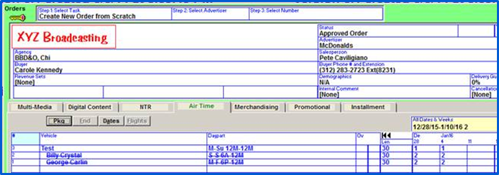
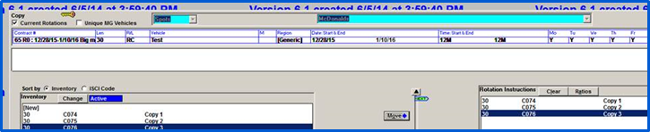
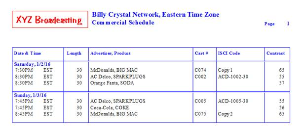
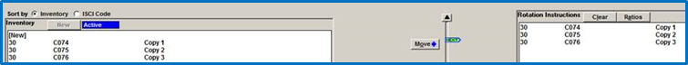
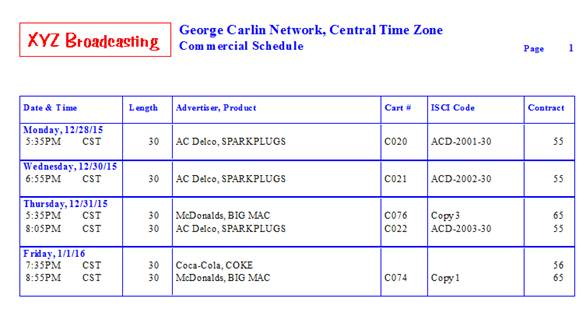
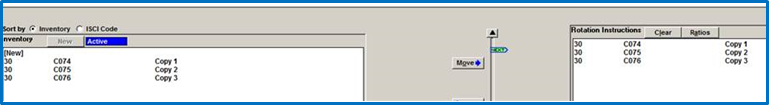
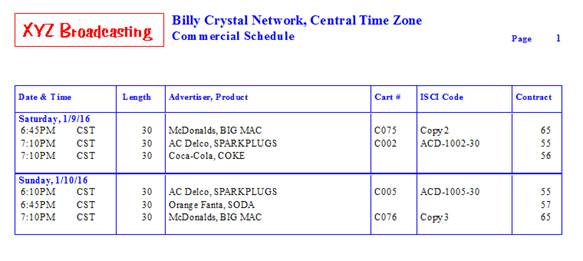
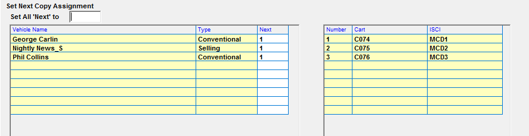

Rotation Assignment Information
Copy gets assigned to spots on a vehicle during the log generation process (if the “assign copy” option is checked on and the log dates are in the future) and when using the “Assign Copy” button. When copy gets assigned to a vehicle, it always starts from whatever piece of copy is indicated by the “Next” arrow for the corresponding rotation instruction. This is true whether the rotation is for a single conventional vehicle, a package vehicle, a hidden line vehicle, a sports vehicle, an airing vehicle, or any type of vehicle that copy can be assigned to.
As each individual piece of copy gets assigned once to a spot, the “Next” arrow is advanced to the next piece of copy. The next time copy gets assigned to a spot that meets the rotation criteria, the system will assign copy from where the “Next” icon is currently placed. In this way, copy gets assigned sequentially, following the ratio defined on in the rotation instruction area.
The way this feature works is illustrated with a detailed example below.
In this example, there is a McDonalds contract that has two hidden lines under the “Test” package vehicle. The hidden lines (Billy Crystal and George Carlin) both have two spots ordered per week for the weeks of 12/28 and 1/4, as shown in the image of the Orders screen.

There are 3 pieces of copy for McDonalds that are in the rotation assigned to the Test package vehicle: Copy 1, Copy 2, and Copy 3. The Next indicator is on Copy 1.

Copy gets assigned to Billy Crystal first for the week of 12/28. It will get Copy 1 and Copy 2. Here is a screenshot of the log showing Copy 1 and Copy 2..

After assigning copy to Billy Crystal, the Next indicator is now on Copy 3.

Copy then gets assigned to George Carlin for the week of 12/28. Because the Next indicator is on Copy 3, the two spots on George Carlin will get Copy 3 and then Copy 1 (because after Copy 3 gets used, the Next indicator goes back to Copy 1 to begin working sequentially through the rotation instructions again).

After assigning copy to George Carlin for the week of 12/28, the Next indicator is now on Copy 2, as shown below.

Copy now gets assigned to Billy Crystal for week 2, Jan. 4th. It gets Copy 2 and Copy 3.

At this point the Next indicator is on Copy 1 and when copy gets assigned to George Carlin, it will get Copy 1 and 2. And so on.
The flow described here is how copy gets assigned for all rotation types, whether it is a package line rotation, a hidden line rotation, or a conventional line rotation (which could be a conventional vehicle, a selling vehicle, a sports vehicle, etc.). Copy is assigned by vehicle (regardless of the type) when logs are generated. Whatever piece of copy has the “Next” indicator for the rotation applicable to the spot, will get the next piece of copy.
Synchronizing copy within the same rotation across vehicles
On version 7.0 and above, it’s possible to make the system update the “Next” pointer independently by vehicle when there are multiple vehicles within the rotation header.
To enable this feature, check on the option “Synchronize copy within same rotation across vehicles” in Traffic Site Options on the Copy tab.
When this option is checked on, and a rotation is created using the "[Several]" vehicle option (in which multiple vehicles are grouped together on a single rotation), and the rotation has more than one piece of copy in the Rotation Instructions area, the "Next" pointer that determines what piece of copy gets assigned next when assigning copy will be advanced independently for each vehicle.
For example, if there were four spots per week for two vehicles that were grouped together in a “Several” vehicle rotation, and there were three pieces of copy defined in the rotation instructions area, by using this feature, the first vehicle would have Copy 1, 2, 3, and 1 assigned to it, and the second vehicle would also have Copy 1, 2, 3 and 1 assigned to it, as the “Next” pointer is advanced independently for each vehicle.
In addition, after saving a "[Several]" vehicle rotation, clicking the up or down arrows to the left of the Rotation Instructions box will pop up a screen (if no changes have been made to the selected rotation) that allows the "Next" arrow to be set manually for the different vehicles that make up the rotation.
The “Set All ‘Next’ to” field can be used to set the “Next” pointer value for all of the vehicles that make up the rotation and by pressing tab, or the “Next” pointer can be edited by typing in the copy number in the white “Next” field. After editing the “Next” value, press Done and select “Yes” from the prompt to save the changes (or press “No” to discard the changes).
